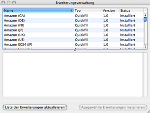

Erweiterungsverwaltung
Über die Erweiterungsverwaltung erhalten Sie einen Überblick über die
verfügbaren und installierten Erweiterungen.

Angaben der Erweiterungsverwaltung
- Name der Erweiterung
- Typ der Erweiterung - Quickfill (Automatisches Ausfüllen), Display (Anzeigestil), Import (Importerweiterung), Export (Exporterweiterung)
- Version - Versionsnummer der jeweiligen Erweiterung
- Status - Installiert, Nicht installiert
Eine Erweiterung installieren
Zunächst können Sie manuell nach neuen Erweiterungen suchen, indem Sie auf die Taste „Liste der Erweiterungen aktualisieren” klicken. Hinter allen Erweiterungen, die Sie noch nicht besitzen, erscheint die Statusmeldung „Nicht Installiert”. Klicken Sie auf die gewünschte Erweiterung, so daß die Zeile blau hervorgehoben wird. Danach klicken Sie die Taste „Ausgewählte Erweiterungen installieren” an. Die gewünschte Erweiterung wird nun geladen und installiert. Nach der Installation sollten Sie Books unbedingt neu starten, damit die Erweiterung verwandt werden kann.